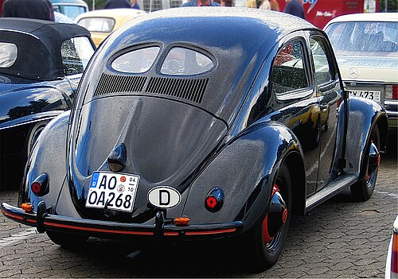
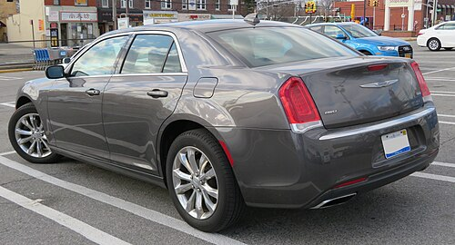
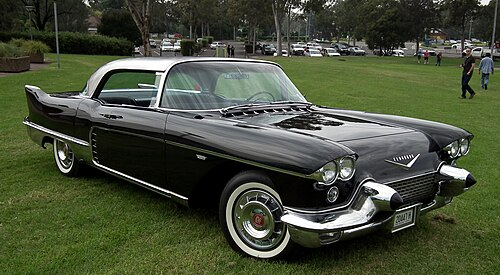

A sedan (/sɪˈdæn/), or saloon, is a passenger car in a three-box configuration with separate compartments for engine, passenger, and cargo. Sedan's first recorded use as a name for a car body was in 1912. The name comes from a 17th-century development of a litter, the sedan chair, a one-person enclosed box with windows and carried by porters.

A fastback sedan is a two-box sedan with a continuous slope from the roof to the base of the decklid, but lacks a hatchback feature. Examples of fastback sedans include the 1930s Stout Scarab, 1940s Tatra, 1950s Ford (UK) Zephyr.

Liftback sedans have a fastback profile, but instead of a trunk lid, the entire back of the car lifts up (using a hatch). Examples include the Tesla Model S, Audi RS7, and Kia Stinger.
Notchback sedans are a three-box sedan, where the passenger volume is distinctly separate from the trunk volume. The roof is generally flat, with a rear window that slopes sharply down to the car's trunk lid.

Hardtop sedans are a body style of cars without a B-pillar. They were popular in the United States from the 1950s into the 1970s.

The price of a sedan car can vary greatly depending on the make, model, features, and whether it's new or used. Here is a general breakdown of sedan price ranges:
Sedans are characterized by their "three-box" design, which distinctly separates the engine, passenger cabin, and cargo (trunk) area. This layout impacts their cargo capacity:
Sedans are generally recognized for their solid build and longevity, making them a dependable choice for many drivers: